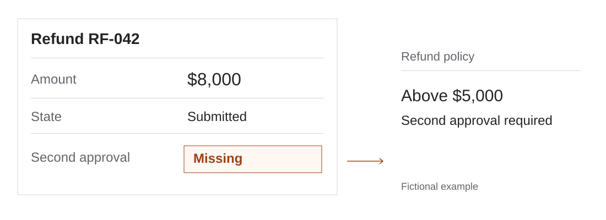
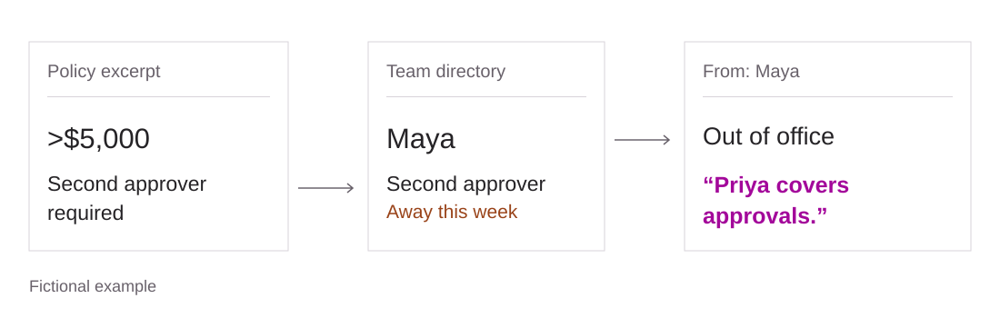
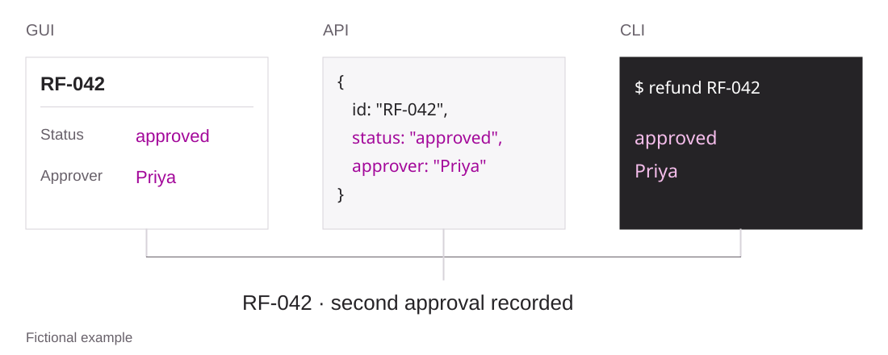

Clicking is a solved-enough problem
After GPT-6 Astra landed, we increasingly noticed that CUA tasks, especially on well-known interfaces such as Microsoft Word and Google Workspace that are easily verifiable, are no longer a challenge. The model has read the documentation of every popular product a thousand times over. Operating an app is, increasingly, retrieval.
Where do we go from here?
A conversation with Hanchung Lee put it in one line for me: an agent that knows how to do a task doesn't necessarily know how to achieve a goal. The precise example he gave me was: an agent might know how to send an email to ask for additional headcount, but it has no idea how to actually get it. Getting the headcount means finding budget, making the case to whoever controls it, and getting them to agree. Some of the knowledge needed to do that is simply not documented anywhere.
I think that gap is where most of the remaining difficulty is. If we train and grade only the software operation, we end up treating an email sent as headcount secured. That changes what I want an RL environment to contain.
The moat is know-how
Think about a new hire on a finance team. Nobody shows them how to use the spreadsheet; they already know. The six months it takes them to become useful go into other things: learning which numbers the CFO actually reads, which vendor is always late, why nobody touches the Q3 forecast tab, and what "close the books" means at this particular company.
None of that is in the product. You could click through every menu and never learn that refunds above some amount need a second approver, or that the second approver is on vacation this week. It's not in the instruction either, because the manager who wrote the instruction finds it too obvious to mention. And yet it's exactly what your work gets judged on. Your colleagues don't care that your clicks were legal.
So if an environment only checks mechanics, it spends its whole budget on the part models are already good at. I'd rather the environment put a domain's unwritten rules into the world and into the reward, so the agent can only get the task right by knowing them or by going and finding them.
This is also why I don't think environment building scales with headcount. A thousand annotators won't write down what a senior recruiter knows. You need a few people who understand the domain well enough to tell which rules matter, and then tooling that turns those rules into worlds and checks.

Text description
Fictional example: refund RF-042 is for $8,000. The refund was submitted, but the second approval is missing. The policy requires second approval above $5,000.
The organization has to respond
There is a limit to putting more information in the world. Finding the second approver's out-of-office email tells you who to ask. It doesn't tell you whether that person will approve the refund. Take the refund example, where Priya covers approvals. Now suppose she disagrees with the amount, and the account manager has already promised the customer a full refund. The agent has found the right person and still has work to do.
This is where I want the environment to respond. Priya needs a reason for saying no, access to the records behind that reason, and authority over a specific decision. If the agent finds a duplicate charge and sends her the evidence, that can change her decision. Asking the same question five times shouldn't make her approve it just because the conversation needs to move on.
So the organization needs state beyond the documents. Who knows what, who can approve what, how much budget remains, and which promises have already been made. Sending a message changes what someone knows. An approval commits resources. A deadline can pass while the agent is still looking for the right person. Those changes have to survive the next tool call.
That also changes the grader. For the headcount request, I want it to check whether an authorized position was actually approved and whether the budget exists. Sending the email is one event on the way there. If hiring is frozen and nobody in the task can authorize an exception, the task needs a different completion condition: establish the constraint and report it, or find an allowed alternative. Otherwise we reward the agent for inventing a way through.
No man is an island
Existing RL environments often overlook the fact that office work only exists on top of existing information.
Ask an agent to "write the quarterly update for the board" in an empty document, in an empty drive, in an empty mailbox, and all it can do is make something up. A real quarterly update is assembled from last quarter's update, the metrics sheet, the three threads where the numbers got revised, and the CEO's comment on the draft that said "less hedging." Most of the work is finding those pieces and putting them together.
So the world has to be full, and a thousand plausible documents don't make it full. In a real drive the files point at each other. The revised revenue number in the board update came from a thread where finance pushed back on sales, and that thread links to a sheet with three tabs named "v2", "v2 final" and "use this one". The project got renamed in March, but half the folders still use the old name. Some people write careful emails, most write "ok, go ahead". If every file in your environment is clean and stands alone, the agent learns that this is what work looks like.
And the fact the task depends on should be in there somewhere, findable by someone careful, but not in the obvious place. Sometimes it lives with a colleague the agent has to ask. The answer should follow from what that colleague knows and what has happened so far.

Text description
Fictional example: the policy requires a second approver for refunds above $5,000. The team directory names Maya, who is away. Her out-of-office email says Priya covers approvals.
Cleaning real data
The obvious shortcut is to skip generation and use real company data. A market for it already exists: the inboxes, ticket trackers, chat logs, and shared drives of companies that wound down or sold their archives are being packaged and sold to people building agents.
But a raw dump is not an environment. It names real people and real customers, it's one snapshot you can't reset or vary, and it records what happened, not what would have counted as doing it right. So I treat it as raw material, and for me cleaning mostly means extraction: keep the regularities and throw away the content. I extract at four layers.
- The organizational skeleton and its timeline. Chronology lets you know when events happen and how documents are created and changed. Combined with org charts, you can see how a certain workflow is established and evolves: e.g. A reports to B, but B has to get budget from C. Most of this comes from metadata (sender, recipient, timestamp, folder), so it's the least sensitive layer and a good place to start.
- Processes and rules. Approval chains, thresholds, exceptions, the template nobody edits. They're scattered across email arguments, rejected requests, and documents that went through six revisions. A language model proposes explicit rules from all that, and a domain expert confirms or kills each one. This is the know-how from earlier, and it's the most valuable thing in the dump.
- Texture statistics. File naming habits, number of drafts, reply lengths, how much of the inbox is noise, how many ways a name gets spelled. Each number becomes a generator parameter, which is how that messiness turns from a vibe into something you can set.
- Task sources. Chains where someone asks, someone delivers, and someone sends it back. Each chain is a task template. The send-backs are places to look for unwritten rules, changed requirements, or disagreements about what done means. A domain expert has to tell those apart before they become grading rules.
Then you throw the original away and rebuild. The skeleton and timeline give you a new cast and a new history, and the rules constrain what can happen in it. After that, let your LLM generate the documents and conversations, with the texture numbers keeping it uneven. Those artifacts have to agree with the state: an email granting approval needs an approver who can grant it, and a budget sheet needs to reflect what has already been committed. The same rules have to hold when the agent starts changing things.
But please check all the AI-generated slop. LLM writing collapse is so annoying. This is also why I don't always throw the content away: many times I prefer to use anonymized data verbatim to avoid issues.
One world, many doors
Aligning GUI and CLI has not been the main focus, which puzzled me. The point of a CUA being able to use a GUI is that many times a CLI/API simply doesn't exist. But I believe that many times the GUI itself might actually be easier to use than the CLI/API. The main goal is to train the model to switch between them efficiently.
So environments should be built as one world exposed through several surfaces: the screen, the API, and a command line, all reading and writing the same state. You get three things out of that.
First, you can pose the same task at different difficulties just by changing which surfaces the agent gets. Second, the reward reads the world, so an agent that went through the API and one that went through the UI get the same outcome score if they reached the same authorized result. Permissions and approval rules have to hold on every surface, and the grader needs the action history to catch violations along the way. Efficiency can be scored separately. Third, the agent gets a chance to learn when to switch. Clicking through two hundred rows to do a bulk edit is correct and also terrible, and knowing that a script would do it, and when a script is appropriate, is know-how too.

Text description
Fictional example: after Priya approves RF-042, the GUI, API and CLI all show approved and Priya. The grader reads the recorded second approval from that shared state.
What does a task actually need to say?
Defining a task looks trivial. The tempting move is to write the instruction the way a real manager would: "Can you sort out the Henderson renewal?" That's realistic, and it's usually underspecified. A human fills in the gaps from context the agent doesn't have.
So the question I keep coming back to is what a real person knows when they get this message that the agent doesn't. It's usually a lot. They know who's asking and what that person cares about; "sort it out" from a sales lead means close the deal, from finance it means check the discount. They know what done looks like here, whether a draft is enough or it has to go out, and whether someone needs to sign off. They know the shared template is off limits, while an agent will happily "improve" it. They know roughly where things live: the contracts are under legal, and the latest numbers are in the sheet pinned in the team channel. And they know who to ask. A lot of real tasks can only be solved by asking someone, so either the task shouldn't depend on that, or the environment needs a simulated colleague who answers consistently.
Some of this goes in the instruction. Some of it goes in the world, as an onboarding doc, a pinned message, or an email from the manager last week. Very little of it should be missing entirely. If the correct answer depends on information that exists nowhere, the task isn't hard, it's unfair, and the reward just teaches the agent to guess.
For the Henderson renewal, I would put the customer's budget, the current contract, the discount limit, and the deadline in the world. The customer also needs to be able to reject an offer. Then the agent has to work out terms both sides can accept, get approval where needed, and finish before the deadline. Updating the renewal tracker should not be enough to pass.
Noise is part of the world
Real offices are noisy. The document has a typo in the header. The meeting got moved twice. Half the inbox is newsletters. A colleague's name is spelled two ways. The page loads slowly, a modal pops up asking you to rate the new feature, and the column you need is the fourteenth one.
An environment that never has any of this is still teaching something, namely that the world is tidy. So perturbation should be a first-class axis of the task distribution, not an afterthought. The kinds I care about:
- Content: distractor documents, near-duplicate files, stale versions, and conflicting information that has to be resolved by date or by who said it.
- Interface: layout changes, pop-ups, slow responses, things you have to scroll to find, transient errors that go away on retry.
- Instruction: the same request written tersely, verbosely, politely, ambiguously, or with a small factual mistake the agent should catch.
- Social: the simulated colleague is busy, replies late, or answers a slightly different question than the one you asked.
- Organizational: the budget changes, approval authority moves to someone else, or the customer rejects terms that worked in another instance.
Moving the submit button tests whether the agent can still operate the app. Changing who controls the budget tests whether it can work out a new way to get the request approved. I want both in the task distribution, with separate measurements so we can tell which ability improved.
What I want to test
The experiment I want is to hold the software roughly fixed and change the organization behind it. Give agents the same applications, but different approval chains, budgets, deadlines, and colleagues. Keep enough tasks in common to compare their ability to operate the software. Then check whether that performance carries over to getting work done under the new constraints.
I'd compare training on fixed workflows with training on organizations that change in response to the agent, keeping the model, training budget, and available interfaces the same. Then I'd put the agents in organizations they hadn't seen before and look at what they actually got done: whether they got the necessary approvals, broke any rules, needed someone to step in, or found another way forward after a request was rejected. That's the comparison I want to make to find out whether the extra environment work teaches something beyond better tool use.
Where this leaves us
If operating software keeps getting cheaper, the value of an environment moves to everything around the operation: a world full of connected, uneven information with a history, tasks built on a real domain's unwritten rules, instructions written the way a real person would write them with the missing context somewhere in the world, and people whose decisions change as the work progresses. The reward has to follow what actually happened, including what the agent committed or broke along the way.
The part I'm working on is the environment: getting people who know the domain to spell out the rules, and building the state, interactions, and checks so we can reset it and run it again. I find that harder than it sounds, and it's what I'm working on now.